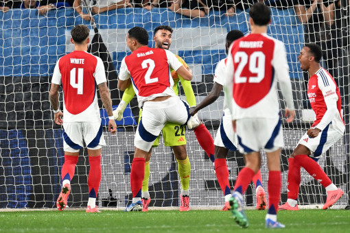

AtalantaនិងArsenalបញ្ចប់ត្រឹមលទ្ធផលស្មើគ្នា០-០សម្រាប់ការប្រកួតបើកឆាកUEFAChampionsLeagueទទួលបានម្នាក់១ពិន្ទុក្នុងការប្រកួតលើទឹកដីរបស់ក្រុមអ៊ីតាលី។ក្នុងការប្រកួតនោះគេមើលឃើញថាអ្នកចាំទីរបស់ក្រុមផ្ញៀវDavidRayaបានសង្គ្រោះបាល់ប៉េណាល់ទីនិងបាល់បន្ថែមប៉េណាល់ទីនោះបានល្អមែនទែន។
DavidRayaអ្នកចាំទីរបស់Arsenalបានសង្គ្រោះបាល់ចំនួនពីរលើកពីការស៊ុតប៉េណាល់ទី១លើកនិងបាល់តែតពេលឡងត្រឡប់មកវិញហើយតែតបន្ថែមដោយខ្សែប្រយុទ្ធReteguiរបស់ក្រុមAtalantaមួយលើកទៀតប៉ុន្តែត្រូវបានDevidRayaជួយបានទាំងពីរ។
